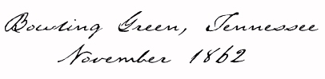
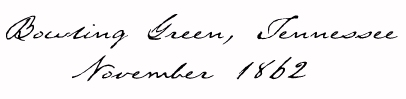
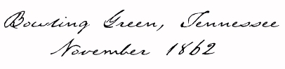

Col. Stumbaugh back in Chambersburg,
Valley Spirit
, Nov. 19, 1862
"It snowed whole night and in the morning the snow was about six inches deep."
Letter from Pvt. Henry Erisman, Co. K.
Nov. 1, 1826
 
